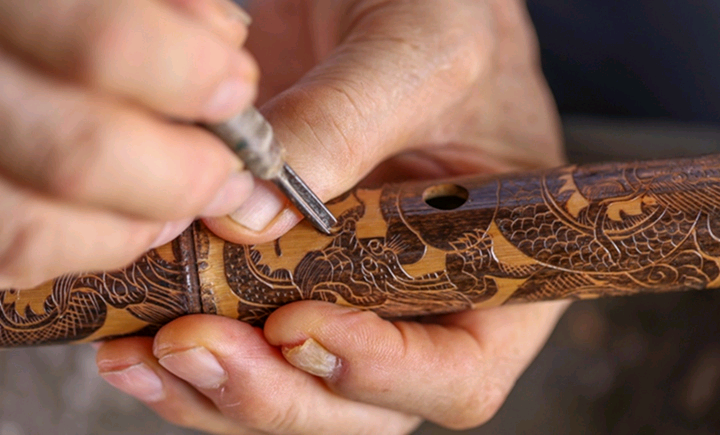
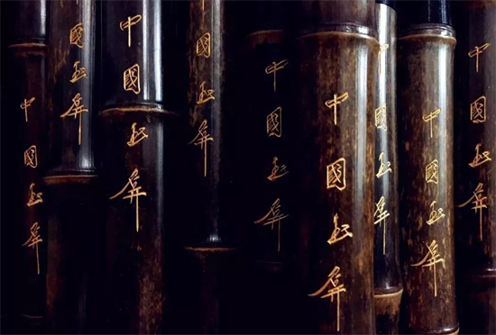
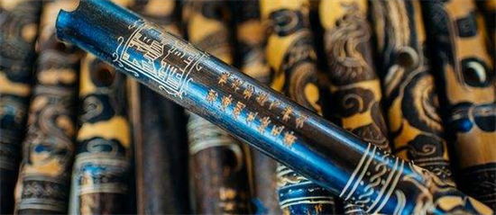
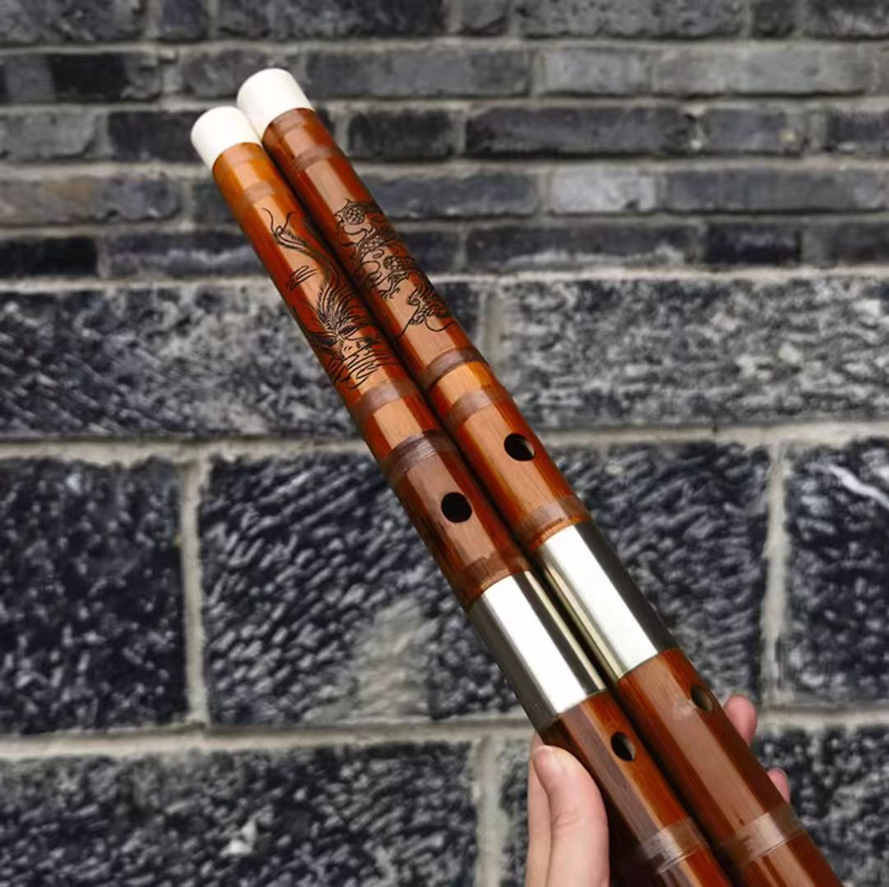
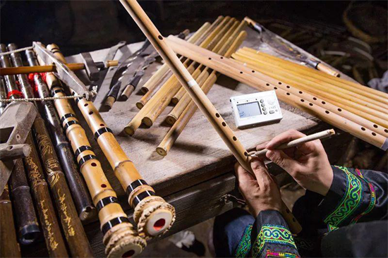
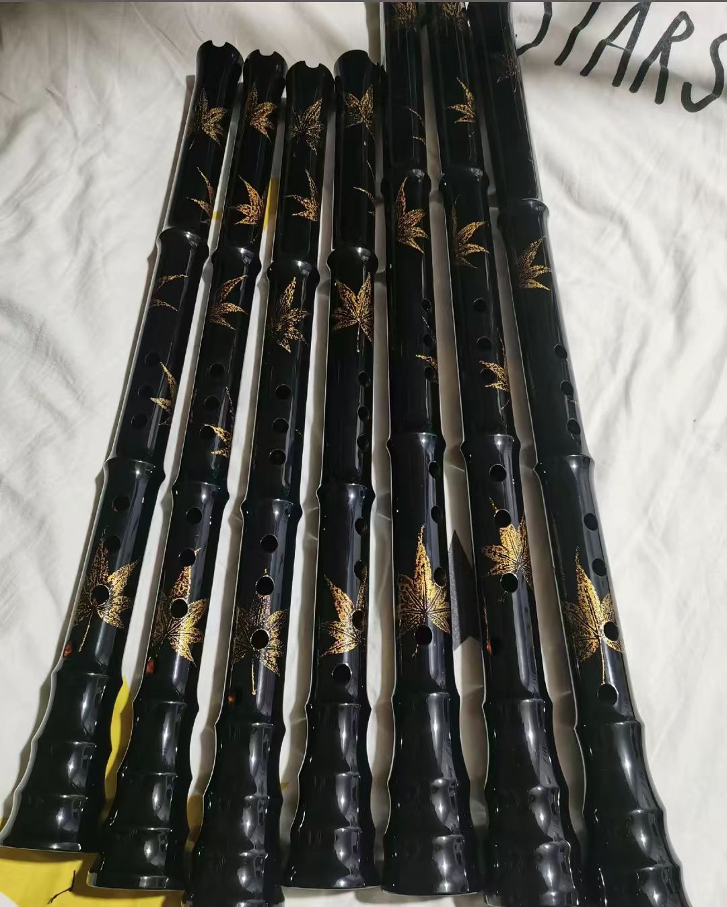

竹韵匠心
中国国家级非物质文化遗产
仙到玉屏留古调
韩湘遗箫传千年
与茅台酒、大方漆器并称"贵州三宝"，享誉海内外
始创于明万历年间，至今已有四百余年历史
2006年列入首批国家级非物质文化遗产名录
1913年伦敦银奖，1923年巴拿马金奖
四十二道工序・道道匠心
玉屏萧笛制作工艺严苛至极，需选用玉屏特有水竹，经取材、制坯、雕刻、成品四大工艺流程，箫制作24道工序，笛制作38道工序，均采用手工制作。
选用玉屏特有水竹，生长于阴山溪旁少见阳光之处。竹节长、肉厚，通根粗细一致。立冬后两月砍伐，此时竹含水糖少，不易开裂霉变。
刨外节、刮竹、选材下料、通内节、烘烤校直、精刨、弹中线、滚墨线、打音孔、水磨、修眼。十余道工序，道道精细。

刻字刻图，脱墨磨字，粘贴图样，雕刻水磨。龙凤呈祥、山水花鸟、诗词歌赋，刀法细腻，将形声之美融为一体。


烘烤上镪水，水磨洗涤，填色揩漆。用骨节草擦去尘垢，玉钏子打磨光亮，管身古铜色彩，古朴典雅。

雌雄相配・音韵清越
玉屏萧笛上多雕刻龙凤图案，有"龙箫凤笛"之称。传统对萧分雌雄，雌萧略细，雄箫略粗，音如凤鸣龙吟之别。雌雄皆配，刚柔相济，其声和谐。
黑底金纹・音色浑厚

精美雕刻・音色清越

自然纹理・寓意吉祥
千年遗韵・匠心传承
相传若干年前，玉屏郑氏到镇远访友，偶遇鹤发童颜的老道鹿皮翁，结为知己。一日，二人游至玉屏峰，见韩湘子、吕洞宾、张果老等八仙从东边天际乘祥云飘然而至，坐在石莲峰上吹拉弹唱。
二人寻至石莲峰，拾得韩湘子遗箫一支。次日，又至飞凤山，老道选取两根凤尾水竹，制成箫笛一对，雌雄相配，声调婉转清幽。道人将制作技艺传授郑氏，世代相传。
玉屏萧笛是玉屏当地侗、汉、苗、土家等多民族文化发展的结晶，具有较高的历史文化和工艺价值。箫笛上雕刻的龙凤、花鸟等图案，既体现了汉族传统文化中对吉祥如意的追求，又融入了侗族等少数民族对自然的崇拜和独特的艺术表达。
闻声见墨・音画合一
龙纹箫
凤纹笛
枫叶箫